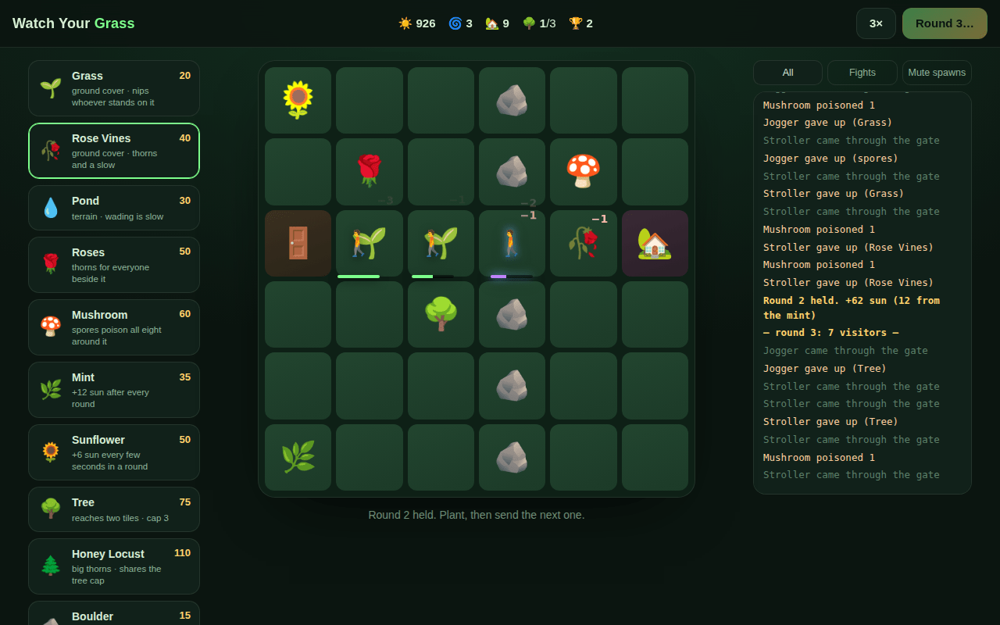

Ten plants and terrain
Grass and rose vines underfoot, a pond to wade through, roses, mushrooms, mint, sunflowers, trees, honey locust and boulders.
Arena defense on a six-by-six lawn. Plant ten kinds of garden, keep six kinds of visitor off the grass, and don't let anyone reach the house.
Tap to plant · phones and computers · works offline once installed

Visitors come through the gate and walk to the house by the shortest way they can find. Ground cover can be walked on; everything else is in the way, so every plant is also a wall. Make the walk long, make it hurt, and spend your sun wisely: roses for thorns, mushrooms for spores, mint and sunflowers for income, three trees at most, and boulders nobody can move.
Watch Your Grass (also known as Arm A Garden, depending on how well the joke is landing) was designed on paper before any code. This version rebuilds it for the browser.
Grass and rose vines underfoot, a pond to wade through, roses, mushrooms, mint, sunflowers, trees, honey locust and boulders.
Strollers, joggers, a kid chasing a ball, an off-leash dog that digs, a mower that flattens ground cover, and the Landscaper every fifth round.
Wall someone in and they trample one plant (never a boulder) to force a way through, logged so you can see it. Boulders that would seal the lawn are refused.
Every animation runs at double the first build's duration, with 1×, 2× and 3× speed when you want it, and a log you can filter.
Softlocks: a unit with no legal move used to stop forever, so the round could never end. The fallback forces a path. Tree cap: three, and the increment is zero, so it never grows. Timing: everything doubled; the board stopped feeling frantic. Palette: the first background was #060e0c and read as sickly; everything moved warmer and brighter.
No engine, no bundler: a DOM grid with CSS transitions, a breadth-first path for every step, and one table that scales the waves. The original ran on a Cloudflare Quick Tunnel; this one installs as an app.
Keep off the grass. Or don't, and see what happens.
more in playkeep scrolling · it opens right here